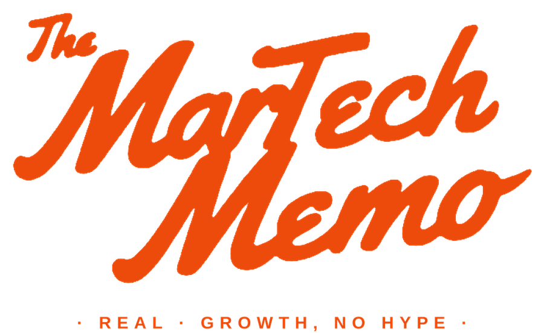

We publish practical GTM Signal Intelligence in three places: a podcast, a newsletter, and on LinkedIn. Each keeps its own home and its own voice. We also publish long-form articles here on scalientiq.com. This page points you to all of it.

Scalient IQ's podcast on real GTM growth, no hype. Straight talk on how B2B revenue teams find and actually use signal across the tools they already run.
A newsletter that breaks down the go-to-market tool universe, one category and one tool at a time, for operators who have to make real buying decisions.
Articles and field notes on GTM Signal Intelligence, where revenue leaks hide, and why AI-search visibility is the signal most tools overlook.
Read-only data lookup returns a field. Read-only diagnosis returns a judgment: a scored leak, a dollar figure, and a ranked play with a named owner. Two different products, and the market keeps confusing them.
What a read-only look at your go-to-market surfaces in 30 days, priced in dollars. When you took the seat, someone handed you a number. Nobody handed you a baseline.
Two articles are published directly on scalientiq.com. You can't automate a leak you haven't found. sets out the difference between a read-only data lookup and a read-only diagnosis. The Baseline Nobody Handed You covers what a read-only look at a go-to-market surfaces in 30 days, priced in dollars. The podcast, the newsletter and the LinkedIn articles each live at their own home, linked above.
Scalient IQ publishes across three properties: The MarTech Memo podcast, the GTM Tool Time newsletter, and Scalient IQ's LinkedIn articles. Each keeps its own home and covers practical GTM Signal Intelligence for B2B revenue leaders.
The MarTech Memo is Scalient IQ's podcast on real GTM growth with no hype. It covers how mid-market B2B revenue teams find and use signal across the tools they already run.
GTM Tool Time is a newsletter that breaks down the go-to-market tool universe, one category and one tool at a time, for operators who have to make real buying decisions.
Scalient IQ is your always-on revenue diagnostic. Read-only across the tools you already run, it surfaces the revenue leaks visible in your pipeline, data, deals, and AI-search visibility, estimates the potential dollar impact where the data supports it, and refreshes on an always-on cadence. It is GTM Signal Intelligence, a read-only layer of Revenue Intelligence.